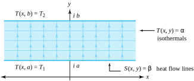
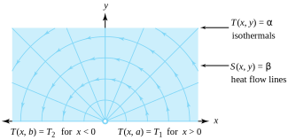
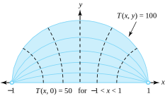
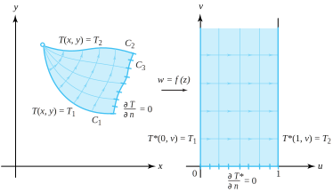
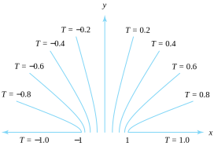

In the theory of heat conduction, an assumption is made that heat flows in the direction of decreasing temperature. Another assumption is that the time rate at which heat flows across a surface area is proportional to the component of the temperature gradient in the direction perpendicular to the surface area. If the temperature \(T(x,y)\) does not depend on time, then the heat flow at the point \((x,y)\) is given by the vector
where \(K\) is the thermal conductivity of the medium and is assumed to be constant. If \(\Delta z\) denotes a straight-line segment of length \(\Delta s\text{,}\) then the amount of heat flowing across the segment per unit of time is
where \(\mathbf{N}\) is the unit vector perpendicular to the segment.
If we assume that no thermal energy is created or destroyed within the region, then the net amount of heat flowing through any small rectangle with sides of length \(\Delta x\) and \(\Delta y\) is identically zero \big(see Figure 10.5.1(a)\big). This observation leads to the conclusion that \(T(x,y)\) is a harmonic function. The following heuristic argument is often used to suggest that \(T(x,y)\) satisfies Laplace’s equation. Using Expression (10.5.1), we find that the amount of heat flowing out of the right edge of the rectangle in Figure 10.5.1(a) is approximately
is an analytic function. The curves \(T(x,y)=K_1\) are called isothermals and are lines connecting points of the same temperature. The curves \(S(x,y)=K_2\) are called heat flow lines, and we can visualize the heat flowing along these curves from points of higher temperature to points of lower temperature. The situation is illustrated in Figure 10.5.1(b).
Boundary value problems for steady state temperatures are realizations of the Dirichlet problem where the value of the harmonic function \(T(x,y)\) is interpreted as the temperature at the point \((x,y)\text{.}\)
Example10.5.2.
Suppose that two parallel planes are perpendicular to the \(z\) plane and pass through the horizontal lines \(y=a\) and \(y=b\) and that the temperature is held constant at the values \(T(x,a)=T_1\) and \(T(x,b) =T_2\text{,}\) respectively, on these planes. Then \(T\) is given by
A reasonable assumption is that the temperature at all points on the plane passing through the line \(y=y_0\) is constant. Hence \(T(x,y) =t(y)\text{,}\) where \(t(y)\) is a function of \(y\) alone. Laplace’s equation implies that \(t,''(y) =0\text{,}\) and an argument similar to that in Example 10.1.1 will show that the solution \(T(x,y)\) has the form given in the preceding equation.
The isothermals \(T(x,y) =\alpha\) are easily seen to be horizontal lines. The conjugate harmonic function is
and the heat flow lines \(S(x,y) =\beta\) are vertical segments between the horizontal lines. If \(T_1>T_2\text{,}\) then the heat flows along these segments from the plane through \(y=a\) to the plane through \(y=b\text{,}\) as illustrated in Figure 10.5.3.

Figure10.5.3.The temperature between parallel planes where \(T_1>T_2\)
Example10.5.4.
Find the temperature \(T(x,y)\) at each point in the upper half-plane \(\mathrm{Im}(z) > 0\) if the temperature along the \(x\) axis satisfies
\begin{equation*}
T(x,0) = T_1 \text{ for } x>0, \text{ and } T(x,0) = T_2 \text{ for } x\lt 0\text{.}
\end{equation*}
Solution.
Since \(T(x,y)\) is a harmonic function, this problem is an example of a Dirichlet problem. From Example 11.2, it follows that the solution is
The isotherms \(T(x,y) =\alpha\) are rays emanating from the origin. The conjugate harmonic function is \(S(x,y) = \frac{1}{\pi}(T_1-T_2)\)\(\ln \,|z|\text{,}\) and the heat flow lines \(S(x,y) =\beta\) are semicircles centered at the origin. If \(T_1>T_2\text{,}\) then the heat flows counterclockwise along the semicircles, as shown in Figure 10.5.5.

Figure10.5.5.The temperature \(T(x,y)\) in the upper half-plane where \(T_1>T_2\)
Example10.5.6.
Find the temperature \(T(x,y)\) at each point in the upper half-disk \(H = \{z :\mathrm{Im}(z) > 0, \, |z|\lt 1 \}\) if the temperatures at points on the boundary satisfy
\begin{align*}
T(x,y) \amp = 100 \text{ for } x+iy = z = e^{i\theta}, 0 \lt \theta \lt \pi;\\
T(x,0) \amp = 50 \text{ for } - 1 \lt x \lt 1\text{.}
\end{align*}
is a one-to-one conformal mapping of the half-disk \(H\) onto the first quadrant \(Q:u>0,\,v>0\text{.}\) The conformal map given by Equation (10.5.6) gives rise to a new problem of finding the temperature \(T^*(u,v)\) that satisfies the boundary conditions
\begin{equation*}
T^*(u,0) = 100 \text{ for } u > 0, \text{ and } T^*(0,v) = 50 \text{ for } v>0\text{.}
\end{equation*}
If we use Example 11.2, the harmonic function \(T^*(u,v)\) is given by
The isothermals \(T(x,y) =\) constant are circles that pass through the points \(\pm 1\text{,}\) as shown in Figure 10.5.7.

Figure10.5.7.The temperature \(T(x,y)\) in a half-disk
Subsection10.5.1An Insulated Segment on the Boundary
We now turn to the problem of finding the steady state temperature function \(T(x,y)\) inside the simply connected domain \(D\) whose boundary consists of three adjacent curves \(C_1, \, C_2\text{,}\) and \(C_3\text{,}\) where \(T(x,y) = T_1\) along \(C_1\text{,}\) and \(T(x,y) = T_2\) along \(C_2\text{.}\) The region is insulated along \(C_3\text{,}\) so that fact that no heat flows across \(C_3\) implies that
where \(\mathbf{N}(x,y)\) is perpendicular to \(C_3\text{.}\) Thus the direction of heat flow must be parallel to this portion of the boundary. In other words, \(C_3\) must be part of a heat flow line \(S(x,y) =\) constant, and the isothermals \(T(x,y)=\) constant intersect \(C_3\) orthogonally.
We can solve this problem by finding a conformal mapping
\begin{equation}
w = f(z) = u(x,y) +iv(x,y)\tag{10.5.8}
\end{equation}
from \(D\) onto the semi-infinite strip \(G:0\lt u\lt 1,\,v>0\) so that the image of the curve \(C_1\) is the ray \(u=0\text{;}\) the image of the curve \(C_2\) is the ray given by \(u=1,\,v>0\text{;}\) and the thermally insulated curve \(C_3\) is mapped onto the thermally insulated segment \(0\lt u\lt 1\) of the \(u\) axis, as shown in Figure 10.5.8.
The new problem in \(G\) is to find the steady state temperature function \(T^*(u,v)\) so that along the rays, we have the boundary values
\begin{equation}
T^*(0,v) = T_1 \text{ for } v>0, \text{ and } T^*(1,v) = T_2 \text{ for } v>0\text{.}\tag{10.5.9}
\end{equation}

Figure10.5.8.Steady state temperatures with one boundary portion insulated
The condition that a segment of the boundary is insulated can be expressed mathematically by saying that the normal derivative of \(T^*(u,v)\) is zero. That is,
The isothermals \(T(x,y) =\) constant and their images under \(w=f(z)\) are also illustrated in Figure 10.5.8.
Example10.5.9.
Find the steady state temperature \(T(x,y)\) for the domain \(D\) consisting of the upper half-plane \(\mathrm{Im}(z) > 0\text{,}\) where \(T(x,y)\) has the boundary conditions
\begin{align*}
T(x,0) \amp = 1 \text{ for } x > 1, \text{ and } T(x,0) = -1 \text{ for } x \lt -1;\\
\frac{\partial T}{\partial n} \amp = T_y(x,0) = 0 \text{ for } -1 \lt x \lt 1\text{,}
\end{align*}
where (again) \(n\) is a coordinate measured perpendicular to the segment.
Solution.
The mapping \(w=\)\(\mathrm{Arcsin}(z)\) conformally maps \(D\) onto the semi-infinite strip \(v>0,\,-\frac{\pi}{2}\lt u\lt \frac{\pi}{2}\text{,}\) where the new problem is to find the steady state temperature \(T^*(u,v)\) that has the boundary conditions
\begin{align*}
T^*\left(\frac{\pi}{2},v\right) \amp = 1 \text{ for } v>0, \text{ and } T^*\left(-\frac{\pi}{2},v\right) = -1 \text{ for } v>0;\\
\frac{\partial T^*}{\partial n} \amp = T_{v}^*(u,0) =0 \text{ for } -\frac{\pi}{2} \lt u \lt \frac{\pi}{2}\text{.}
\end{align*}
Using the result of Example 10.1.1, we can easily obtain the solution:
where \(-\frac{\pi}{2}\lt \mathrm{Arcsin}(t)\lt \frac{\pi}{2}\text{;}\) see Figure 10.5.10.

Figure10.5.10.The temperature \(T(x,y)\) with \(T_y(x,0)=0\) for \(-1\lt x\lt 1\text{,}\) and boundary values \(T(x,0)=-1\) for \(x\lt -1\) and \(T(x,0)=1\text{,}\) for \(x>1\)
ExercisesExercises
1.
Show that \(H(x,y,z)=\frac{1}{\sqrt{x^2+y^2+z^2}}\) satisfies Laplace’s equation \(H_{xx}+H_{yy}+H_{zz}=0\) in three-dimensional Cartesian space, but that \(h(x,y)=\frac{1}{\sqrt{x^2+y^2}}\)does not satisfy equation \(h_{xx}+h_{yy}=0\) in two-dimensional Cartesian space.
Solution.
For \(H(x,y,z)=\frac{1}{\sqrt{x^2+y^2+z^2}}\text{,}\) we get \(H_{xx}+H_{yy}+H_{zz}=\frac{2x^2-y^2-z^2}{(x^2+y^2+z^2)^{\frac{5}{2}}}+\frac{-x^2+2y^2-z^2}{(x^2+y^2+z^2)^{\frac{5}{2}}} + \frac{-x^2-y^2+2z^2}{(x^2+y^2+z^2)^{\frac{5}{2}}}=0\text{,}\) and for \(h(x,y)=\frac{1}{\sqrt{x^2+y^2}}\) we have \(h_{xx}+h_{yy}=\frac{2x^2-y^2}{(x^2+y^2)^{\frac{5}{2}}}+\frac{-x^2+2y^2}{(x^2+y^2)^{\frac{5}{2}}} = \frac{1}{(x^2+y^2)^{\frac{3}{2}}} \ne 0\text{.}\)
2.
Find the temperature function \(T(x,y)\) in the infinite strip bounded by the lines \(y=-x\) and \(y=1-x\) that satisfies the following boundary values (shown in Figure 10.5.11).
\begin{align*}
T(x,-x) \amp = 25 \text{ for all } x;\\
T(x,1-x) \amp = 75 \text{ for all } x\text{.}
\end{align*}
Find the temperature function \(T(x,y)\) in the semi-infinite strip \(-\frac{\pi}{2}\lt x\lt \frac{\pi}{2},\;y>0\) that satisfies the following boundary values (shown in Figure 10.5.14):
\begin{align*}
T\left(\frac{\pi}{2},y\right) \amp = 100 \text{ for } y>0;\\
T(x,y) \amp = 0 \text{ for } -\frac{\pi}{2} \lt x \lt \frac{\pi}{2};\\
T\left(-\frac{\pi}{2}, \, y\right) \amp = 100 \text{ for } y > 0\text{.}
\end{align*}
Find the temperature function \(T(x,y)\) in the domain \(r>1,\;0\lt \theta \lt \pi\) that satisfies the following boundary values (shown in Figure 10.5.15). \hint{\(w=\frac{i(1-z)}{1+z}\text{.}\)}
\begin{align*}
T(x,0) \amp = 0 \text{ for } x > 1;\\
T(x,0) \amp = 0 \text{ for } x \lt -1;\\
T(x,y) \amp = 100 \text{ if } z=e^{i\theta}, \; 0\lt \theta \lt \pi \text{.}
\end{align*}
Find the temperature function \(T(x,y)\) in the domain \(0\lt r\lt 1,\,0\lt \mathrm{Arg}(z)\lt \alpha\) that satisfies the following boundary conditions (shown in Figure 10.5.17). Use \(w=\mathrm{Log}(z)\text{.}\)
\begin{align*}
T(x,0) \amp = 100 \text{ for } 0 \lt x \lt 1;\\
T(x,y) \amp = 50 \text{ for } x+iy=z=re^{i\alpha}, \; 0 \lt r \lt 1;\\
\frac{\partial T}{\partial n} \amp = 0 \text{ for } x+iy=z=e^{i\theta}, \; 0\lt \theta \lt \alpha\text{.}
\end{align*}
Find the temperature function \(T(x,y)\) in the first quadrant \(x>0,\,y>0\) that satisfies the following boundary conditions (shown in Figure 10.5.18).
\begin{align*}
T(x,0) \amp = 100 \text{ for } x > 1;\\
T(0,y) \amp = -50 \text{ for } y > 1;\\
\frac{\partial T}{\partial n} \amp = T_y(x,0) =0 \text{ for } 0 \lt x \lt 1;\\
\frac{\partial T}{\partial n} \amp = T_x(0,y) = 0 \text{ for } 0 \lt y \lt 1\text{.}
\end{align*}
Find the temperature function \(T(x,y)\) in the infinite strip \(0\lt y\lt \pi\) that satisfies the following boundary conditions (shown in Figure 10.5.19). \hint{Use \(w=e^{z}\text{.}\)}
\begin{align*}
T(x,0) \amp = 50 \text{ for } x > 0;\\
T(x,\pi) \amp = -50 \text{ for } x > 0;\\
\frac{\partial T}{\partial n} \amp = T_y(x,0) = 0 \text{ for } x \lt 0;\\
\frac{\partial T}{\partial n} \amp = T_y(x,\pi ) = 0 \text{ for } x \lt 0\text{.}
\end{align*}
Find the temperature function \(T(x,y)\) in the upper half-plane \(\mathrm{Im}(z) >0\) that satisfies the following boundary conditions (shown in Figure 10.5.20).
\begin{align*}
T(x,0) \amp = 100 \text{ for } 0 \lt x \lt 1;\\
T(x,0) \amp = -100 \text{ for } -1 \lt x \lt 0;\\
\frac{\partial T}{\partial n} \amp = T_y(x,0) = 0 \text{ for } x > 1;\\
\frac{\partial T}{\partial n} \amp = T_y(x,0) = 0 \text{ for } x \lt -1\text{.}
\end{align*}
Find the temperature function \(T(x,y)\) in the first quadrant \(x>0,\,y>0\) that satisfies the following boundary conditions (shown in Figure 10.5.21).
\begin{align*}
T(x,0) \amp = 50 \text{ for } x > 0;\\
T(0,y) \amp = -50 \text{ for } y > 1;\\
\frac{\partial T}{\partial n} \amp = T_x(0,y) =0 \text{ for } 0 \lt y \lt 1\text{.}
\end{align*}
in the upper half-disk \(\{z: |z|\lt 1, \; \mathrm{Im}(z)>0\}\text{,}\) show that the isothermals \(T(x,y) =\alpha\) are portions of circles that pass through the points \(+1\) and \(-1\text{,}\) as illustrated in Figure 10.5.22.
The isothermals are \(\{(x,y):T(x,y)=k\}\text{.}\)The equation \(100-\frac{100}{\pi}\arctan(\frac{1-x^2-y^2}{2y})=k\) can be manipulated to yield \(c=\tan\frac{\pi}{100}(100-k)=\frac{1-x^2-y^2}{2y}\) which is better recognized as the circle \(x^2+(y+c)^2=1+c^2\text{.}\)
in the upper half-plane \(\mathrm{Im}(z) >0\text{,}\) show that the isothermals \(T(x,y) =\alpha\) are portions of hyperbolas that have foci at the points \(\pm 1\text{,}\) as illustrated in Figure 10.5.23.